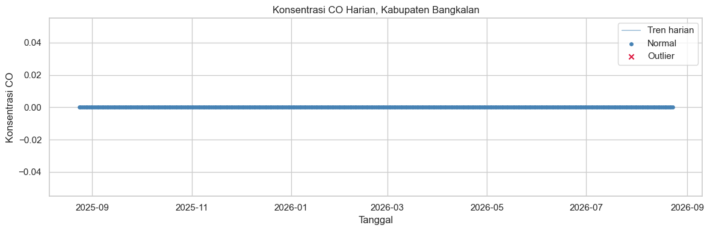
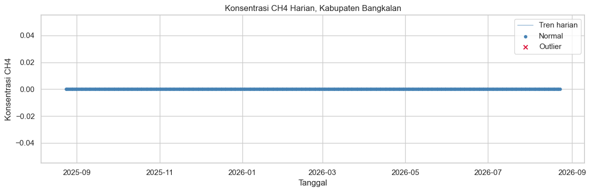

Analisis Kualitas Udara - Kabupaten Bangkalan#
Notebook ini melanjutkan hasil ekstraksi dari 4-ekstraksi-data.ipynb untuk
melakukan eksplorasi dan analisis deret waktu polutan udara (NO2, CO, SO2,
CH4) di Kabupaten Bangkalan, menggunakan satu tabel gabungan
bangkalan_polutan.csv.
Alur kerja notebook ini:
Import pustaka yang dibutuhkan
Memuat tabel CSV gabungan hasil ekstraksi
Visualisasi peta interaktif area Bangkalan dengan
folium, mengikuti bentuk batas administratif asli, bukan kotakPengecekan dan penanganan missing values pada data deret waktu
Deteksi anomali atau outlier dengan Isolation Forest
Visualisasi deret waktu yang membedakan titik normal vs outlier
1. Import Pustaka#
pandas,numpy, manipulasi data tabular dan numerik.matplotlib,seaborn, visualisasi grafik statis.folium, peta interaktif.json, membaca file GeoJSON batas wilayah Bangkalan.sklearn.ensemble.IsolationForest, algoritma deteksi anomali.os, pengecekan keberadaan file.
import json
import os
import folium
import matplotlib.pyplot as plt
import numpy as np
import pandas as pd
import seaborn as sns
from sklearn.ensemble import IsolationForest
sns.set_theme(style="whitegrid")
2. Memuat Tabel Gabungan Hasil Ekstraksi#
Data yang dimuat adalah satu tabel tunggal bangkalan_polutan.csv, dengan
kolom date, NO2, CO, SO2, dan CH4, dihasilkan oleh notebook
4-ekstraksi-data.ipynb.
CSV_PATH = "../data/csv/bangkalan_polutan.csv"
POLLUTANTS = ["NO2", "CO", "SO2", "CH4"]
df = pd.read_csv(CSV_PATH, parse_dates=["date"])
df = df.sort_values("date").reset_index(drop=True)
print(f"Dimuat: {len(df)} baris, dari {df['date'].min().date()} sampai {df['date'].max().date()}")
df.head()
Dimuat: 314 baris, dari 2025-08-24 sampai 2026-08-23
| date | NO2 | CO | SO2 | CH4 | |
|---|---|---|---|---|---|
| 0 | 2025-08-24 | 0.0 | 0.0 | 0.0 | 0.0 |
| 1 | 2025-08-25 | 0.0 | 0.0 | 0.0 | 0.0 |
| 2 | 2025-08-26 | 0.0 | NaN | 0.0 | NaN |
| 3 | 2025-08-27 | 0.0 | 0.0 | 0.0 | 0.0 |
| 4 | 2025-08-28 | 0.0 | 0.0 | 0.0 | NaN |
3. Peta Interaktif Wilayah Bangkalan#
Peta folium di bawah menampilkan batas administratif asli Kabupaten
Bangkalan menggunakan folium.GeoJson, bukan kotak bounding box, beserta
titik pusat wilayah. Bentuk polygon ini sama dengan yang dipakai pada proses
aggregate_spatial di notebook ekstraksi, sehingga peta ini juga berfungsi
memverifikasi area yang sesungguhnya diagregasi.
BOUNDARY_PATH = "../data/bangkalan-boundary.geojson"
with open(BOUNDARY_PATH, encoding="utf-8") as f:
bangkalan_geojson = json.load(f)
coords = bangkalan_geojson["geometry"]["coordinates"][0]
centroid_lon = sum(pt[0] for pt in coords) / len(coords)
centroid_lat = sum(pt[1] for pt in coords) / len(coords)
m = folium.Map(location=(centroid_lat, centroid_lon), zoom_start=10, tiles="OpenStreetMap")
folium.GeoJson(
bangkalan_geojson,
name="Batas Kabupaten Bangkalan",
style_function=lambda feature: {
"fillColor": "#d62728",
"color": "#d62728",
"weight": 2.5,
"fillOpacity": 0.1,
},
tooltip="Batas administratif Kabupaten Bangkalan",
).add_to(m)
folium.Marker(
location=(centroid_lat, centroid_lon),
tooltip="Titik pusat (centroid) Kabupaten Bangkalan",
icon=folium.Icon(color="red", icon="cloud"),
).add_to(m)
m
4. Pengecekan dan Penanganan Missing Values#
Untuk setiap polutan pada tabel gabungan, kita:
Melengkapi deret waktu agar memiliki baris untuk setiap hari dalam rentang tanggal (beberapa hari mungkin tidak memiliki data sama sekali akibat tutupan awan atau tidak ada lintasan satelit), menggunakan
asfreq("D").Menghitung jumlah dan persentase nilai NaN sebelum penanganan.
Mengisi nilai yang hilang dengan interpolasi linear berbasis waktu (
interpolate(method="time")), yang cocok untuk data deret waktu kontinu seperti konsentrasi polutan atmosfer.Menggunakan
ffilldanbfillsebagai fallback untuk NaN di ujung awal atau akhir deret waktu yang tidak bisa diinterpolasi.
df_full = df.set_index("date").asfreq("D")
for pollutant in POLLUTANTS:
n_missing_before = df_full[pollutant].isna().sum()
pct_missing_before = 100 * n_missing_before / len(df_full)
print(f"[{pollutant}] Missing sebelum penanganan: {n_missing_before} dari "
f"{len(df_full)} baris ({pct_missing_before:.1f} persen)")
df_full[pollutant] = df_full[pollutant].interpolate(method="time")
df_full[pollutant] = df_full[pollutant].ffill().bfill()
n_missing_after = df_full[pollutant].isna().sum()
print(f"[{pollutant}] Missing setelah penanganan : {n_missing_after}")
df = df_full.reset_index()
[NO2] Missing sebelum penanganan: 87 dari 365 baris (23.8 persen)
[NO2] Missing setelah penanganan : 0
[CO] Missing sebelum penanganan: 95 dari 365 baris (26.0 persen)
[CO] Missing setelah penanganan : 0
[SO2] Missing sebelum penanganan: 67 dari 365 baris (18.4 persen)
[SO2] Missing setelah penanganan : 0
[CH4] Missing sebelum penanganan: 294 dari 365 baris (80.5 persen)
[CH4] Missing setelah penanganan : 0
5. Deteksi Anomali dengan Isolation Forest#
Isolation Forest mendeteksi titik titik yang mudah dipisahkan dari titik
lainnya sebagai anomali. Parameter contamination=0.05 berarti kita
memperkirakan sekitar 5 persen dari data adalah outlier.
Untuk setiap polutan pada tabel gabungan, sebuah kolom baru
<polutan>_anomaly ditambahkan, bernilai True jika titik tersebut
terdeteksi sebagai outlier.
def detect_outliers_isolation_forest(values, contamination=0.05, random_state=42):
"""Mengembalikan array boolean anomali menggunakan Isolation Forest."""
model = IsolationForest(contamination=contamination, random_state=random_state)
raw_labels = model.fit_predict(values.reshape(-1, 1)) # 1 = normal, -1 = outlier
return raw_labels == -1
for pollutant in POLLUTANTS:
anomaly_col = f"{pollutant}_anomaly"
df[anomaly_col] = detect_outliers_isolation_forest(df[pollutant].values)
n_outliers = df[anomaly_col].sum()
print(f"[{pollutant}] Outlier terdeteksi: {n_outliers} dari {len(df)} titik "
f"({100 * n_outliers / len(df):.1f} persen)")
df.head()
[NO2] Outlier terdeteksi: 0 dari 365 titik (0.0 persen)
[CO] Outlier terdeteksi: 0 dari 365 titik (0.0 persen)
[SO2] Outlier terdeteksi: 0 dari 365 titik (0.0 persen)
[CH4] Outlier terdeteksi: 0 dari 365 titik (0.0 persen)
| date | NO2 | CO | SO2 | CH4 | NO2_anomaly | CO_anomaly | SO2_anomaly | CH4_anomaly | |
|---|---|---|---|---|---|---|---|---|---|
| 0 | 2025-08-24 | 0.0 | 0.0 | 0.0 | 0.0 | False | False | False | False |
| 1 | 2025-08-25 | 0.0 | 0.0 | 0.0 | 0.0 | False | False | False | False |
| 2 | 2025-08-26 | 0.0 | 0.0 | 0.0 | 0.0 | False | False | False | False |
| 3 | 2025-08-27 | 0.0 | 0.0 | 0.0 | 0.0 | False | False | False | False |
| 4 | 2025-08-28 | 0.0 | 0.0 | 0.0 | 0.0 | False | False | False | False |
6. Visualisasi Deret Waktu: Normal vs Outlier#
Untuk setiap polutan digambar satu grafik yang terdiri dari garis tren harian, titik biru untuk data normal, dan titik merah untuk data yang terdeteksi sebagai outlier oleh Isolation Forest.
Visualisasi ini memudahkan identifikasi periode dengan lonjakan atau penurunan konsentrasi polutan yang tidak biasa, misalnya akibat aktivitas transportasi di sekitar akses Suramadu, kebakaran lahan, atau anomali pada data satelit itu sendiri.
for pollutant in POLLUTANTS:
anomaly_col = f"{pollutant}_anomaly"
normal_df = df[~df[anomaly_col]]
outlier_df = df[df[anomaly_col]]
plt.figure(figsize=(12, 4))
plt.plot(df["date"], df[pollutant], color="steelblue", linewidth=1,
alpha=0.6, label="Tren harian")
plt.scatter(normal_df["date"], normal_df[pollutant], color="steelblue",
s=15, label="Normal")
plt.scatter(outlier_df["date"], outlier_df[pollutant], color="crimson",
s=35, marker="x", label="Outlier")
plt.title(f"Konsentrasi {pollutant} Harian, Kabupaten Bangkalan")
plt.xlabel("Tanggal")
plt.ylabel(f"Konsentrasi {pollutant}")
plt.legend()
plt.tight_layout()
plt.show()


Penutup#
Beberapa langkah lanjutan yang bisa kamu tambahkan sendiri sesuai kebutuhan tugas Proyek Sains Data:
Membandingkan pola musiman antar polutan, misalnya dengan
df.resamplebulanan.Menghitung korelasi antar polutan (
pandas.DataFrame.corr()) pada tabel gabungandf[POLLUTANTS].Mengaitkan tanggal tanggal outlier dengan kejadian tertentu (hari besar, cuaca ekstrem, aktivitas industri) sebagai bagian dari interpretasi hasil.
Menyusun narasi kesimpulan untuk laporan Jupyter Book berdasarkan pola yang ditemukan pada grafik di atas.